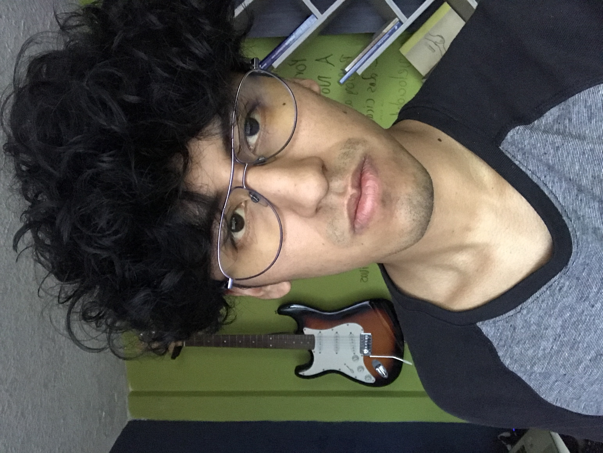

Datos Personales
Nombre: Bryan Manobanda
Teléfono: 0995273383
Email: bryan.manobanda@epn.edu.ec
Dirección: Balcón del Valle E19-38
Formación
Formal
- Educación Primaria (2013): Aurelio Espinoza Polit
- Educación Secundaria (2017): Juan Pío Montufar
- Educación Técnica (2018): Central Técnico
- Educación Universitaria (2022): Escuela Politécnica Nacional (7mo semestre)
Idiomas
- Curso de Idiomas (2022): Centro de Educación Continua CEC
Cursos complementarios
- Curso de HTML - CSS - Javascript (2020): Plataforma de Educación Online Platzi
- Curso de Producción Audiovisual (2021): Plataforma de Educación Online Platzi
- Curso de Diseño Gráfico (2022): Plataforma de Educación Online Platzi
Habilidades
- Lenguajes de programación: Python, Java y C++
- Herramientas de diseño: Photoshop, Illustrator, After Effects y Blender
Experiencia
Técnico en ECC Servicios (2018): Trabaje 6 meses brindado soporte t^eacutecnico
en empresas como el Santa Maria, Sana Sana y pequeños locales que necesitaban instalación de
camaras de seguridad o reparación de algún dispositivo.
Técnico en Sermatech (2019): Trabeje por 1 año reparando computadoras tanto
en hardware como software. Se hacia reparaciones de monitores, cambios de procesadores y placas bases.